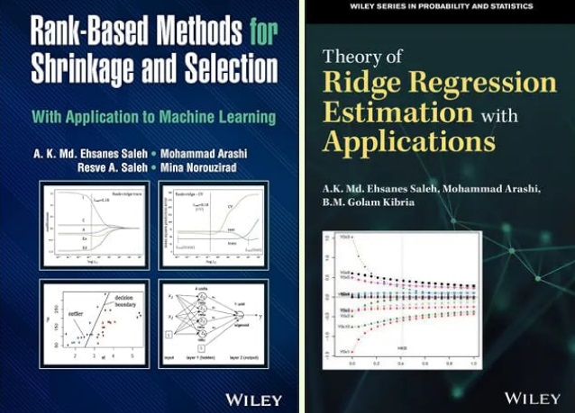

Appendix: Mathematics and Machine Learning#
Sparse Optimization: Theory and Applications#
Sparse optimization is a fundamental paradigm in mathematical modeling that seeks solutions with few non-zero elements, often formalized through ℓ₁-norm regularization or non-convex penalties. This framework is grounded in the Compressed Sensing (CS) theory [Don06], which guarantees exact signal recovery from sub-Nyquist measurements if the signal is sparse in some basis. Key applications include:
Medical Imaging: CS enables faster MRI scans by reconstructing images from limited k-space samples (Lustig et al., 2007), as highlighted in the CUHK lecture notes on CS (p. 13).
Signal Processing: Sparse methods underpin denoising (e.g., wavelet shrinkage) and inpainting, where total variation minimization preserves edges while removing noise (Figueiredo, 2021, slides p. 8).
Machine Learning: Sparse regression (e.g., LASSO; Tibshirani, 1996) and robust PCA (Candès et al., 2011) are critical for feature selection and anomaly detection. The Ghent tutorial (p. 5) further links sparsity to deep network pruning.
Statistics: High-dimensional inference (e.g., genomics) benefits from sparsity-induced interpretability (Bühlmann & Van de Geer, 2011).
The field continues to evolve with non-convex penalties (e.g., SCAD) and greedy algorithms (OMP), balancing computational efficiency and statistical guarantees. For a unified perspective, see the cited references and tutorials.
Connection Between Sparse Learning and Functional Analysis#
Sparse recovery techniques like OMP and LASSO are deeply rooted in functional analysis, which explains why terms like Hilbert spaces and Banach spaces frequently appear in machine learning research. These mathematical frameworks provide the theoretical foundation for understanding sparsity-inducing methods.
Hilbert Spaces and Orthogonal Projections#
Hilbert spaces (complete inner product spaces) are essential for analyzing orthogonal projections and basis expansions. For example:
OMP iteratively projects the residual onto the span of selected basis vectors, leveraging the orthogonality principle to minimize error at each step.
The inner product structure of Hilbert spaces enables efficient computation of correlations between residuals and dictionary atoms (columns of \( X \)).
Banach Spaces and \( \ell_1 \)-Regularization#
LASSO operates in the context of Banach spaces (complete normed vector spaces) due to its reliance on the \( \ell_1 \)-norm:
The \( \ell_1 \)-norm’s non-smoothness at the origin induces sparsity, a property studied in Banach space geometry.
Unlike Hilbert spaces, Banach spaces generalize optimization techniques to non-Euclidean settings, crucial for sparse regularization.
Fourier, Wavelet, and Other Representations#
Sparse learning often exploits transform domains (e.g., Fourier, wavelet, or learned dictionaries) where signals admit concise representations: - These domains provide structured bases where only a few coefficients are significant. - The connection to functional analysis arises because such bases typically form frames or Riesz bases in Hilbert spaces, ensuring stable sparse approximations.
From Fixed Bases to Learned Representations#
Classical Sparse Coding:
Relies on predefined bases (e.g., Fourier, wavelets) where signals admit sparse representations.
These bases often form frames or Riesz bases in Hilbert spaces, ensuring stable approximations.
Convolutional Neural Networks (CNNs):
Learn adaptive bases/filters from data, implicitly constructing sparse-like representations through:
Local connectivity: Filters act as localized basis functions.
Activation sparsity: ReLU promotes de facto sparsity in feature maps.
While CNNs lack explicit \( \ell_0 \)/\( \ell_1 \) constraints, their hierarchical structure approximates multi-scale sparse decompositions, akin to wavelet analysis but data-driven.
The Evolving Role of Sparse Methods#
While deep learning has reduced reliance on handcrafted sparse models in some domains, sparse methods remain relevant because:
Interpretability:
OMP/LASSO yield explicit basis selections, whereas CNNs operate as black boxes.
Critical in fields like medicine or physics where model transparency is required.
Data-Efficiency:
Sparse methods often outperform DL in low-data regimes (e.g., medical imaging with small datasets).
Theoretical Guarantees:
Compressed sensing (OMP) and convex optimization (LASSO) provide recovery guarantees under precise conditions, unlike empirical DL results.
Hybrid Approaches:
Modern architectures (e.g., ISTA-Net, Learned Iterative Shrinkage) blend sparse priors with deep learning, showing that sparsity remains a useful inductive bias.
Sparse learning and deep learning are complementary:
CNNs dominate when data is abundant and interpretability is secondary.
OMP/LASSO persist in scenarios requiring rigor, efficiency, or transparency.
Functional analysis bridges these paradigms, providing tools to analyze both fixed and learned representations.
MRI reconstruction#
MRI reconstruction can be formulated as an inverse problem where the goal is to recover the original image \( \mathbf{m} \) from under-sampled k-space measurements \( \mathbf{y} \). This is achieved using sparse optimization techniques.
A common formulation for MRI reconstruction is:
where:
\( \mathbf{m} \) represents the MRI image to be reconstructed.
\( \mathbf{F}_u \) is the under-sampled Fourier operator, mapping the image to k-space.
\( \mathbf{y} \) is the acquired k-space data (limited measurements).
\( \Psi \) is the sparsifying transform (e.g., wavelet or total variation).
\( \|\Psi \mathbf{m}\|_p \) represents the sparsity constraint, often chosen as \( \ell_1 \) (similar to LASSO) or \( \ell_0 \) (similar to OMP).
\( \lambda \) controls the balance between data fidelity and sparsity enforcement.
By leveraging sparsity, MRI reconstruction enables faster scans with fewer measurements while preserving essential anatomical details.
PyTomography#
PyTomography is an open-source Python library designed for medical image reconstruction, particularly in SPECT (Single-Photon Emission Computed Tomography) and PET (Positron Emission Tomography) imaging. Developed to address the challenges of quantitative tomographic reconstruction, PyTomography provides a flexible, modular framework for implementing advanced reconstruction algorithms, including attenuation correction, scatter correction, and resolution modeling.
Key Features#
✅ Open-source & community-driven (GitHub)
✅ Supports multiple reconstruction techniques (OSEM, MLEM, deep learning-based methods)
✅ Integrates with GPU acceleration for faster computations
✅ Well-documented with tutorials and API references (ReadTheDocs)
✅ Validated in peer-reviewed research (Scientific Reports, 2024)
Why Use PyTomography?#
PyTomography bridges the gap between research and clinical applications by offering:
Reproducible reconstruction workflows
Customizable forward and backward projection models
Seamless integration with Python’s scientific computing stack (NumPy, PyTorch)
Whether for academic research, algorithm development, or clinical prototyping, PyTomography provides a powerful, accessible toolkit for next-generation medical imaging reconstruction.
PySAP#
The Python Sparse data Analysis Package (PySAP) was developed as part of COSMIC, a multi-disciplinary collaboration between NeuroSpin, experts in biomedical imaging, and CosmoStat, experts in astrophysical image processing. PySAP is designed to provide state-of-the-art signal processing tools for various imaging domains, including:
Astronomy
Electron Tomography
Magnetic Resonance Imaging (MRI)
One of PySAP’s core contributions lies in sparse optimization, a powerful technique widely used for reconstructing images from incomplete or noisy data. The package implements advanced compressed sensing algorithms[The20], allowing efficient image restoration while preserving essential features.
In medical imaging, PySAP plays a crucial role in MRI reconstruction by leveraging sparsity-based approaches to improve scan efficiency. It enables:
Reduced scanning time while maintaining image quality
Improved reconstruction of under-sampled k-space data
Integration of machine learning techniques for further enhancement
The first release of PySAP was presented in Farrens et al. [GGRR+20] and continues to evolve as a robust tool for sparse signal processing.
For further exploration, visit the PySAP GitHub repository.
In deep learning course, we will encounter additional examples of minimizing \( ||Ax - b|| \), including applications like image deblurring and super-resolution.

For valuable references on Ridge and Shrinkage methods, consider consulting Prof. Arashi’s books [SAK19, SASN22].
Fourier series expansion of a square wave#
Component |
Formula |
Code Implementation |
Purpose |
|---|---|---|---|
Odd Harmonics |
((2n-1)) |
|
Square waves require only odd harmonics (1f, 3f, 5f, …). |
Amplitude |
(\frac{4}{\pi (2n-1)}) |
|
Ensures higher harmonics contribute less (weighted by (1/n)). |
Sine Wave |
(\sin(2\pi (2n-1) t)) |
|
Generates the sine wave at the harmonic frequency. |
import numpy as np
import matplotlib.pyplot as plt
# Define the square wave function
def square_wave(x, harmonics=5):
"""
Generate a square wave using Fourier series (sum of sine waves).
Parameters:
x: Time points
harmonics: Number of sine waves to sum
Returns:
Square wave approximation
"""
y = np.zeros_like(x)
for n in range(1, harmonics + 1):
# Fourier series for square wave: (4/π) * Σ [sin(2π(2n-1)*ωt)/(2n-1)]
frequency = 2 * n - 1 # Odd harmonics only
amplitude = 4 / (np.pi * frequency)
y += amplitude * np.sin(2 * np.pi * frequency * x)
return y
# Time points (0 to 1 second, 1000 samples)
t = np.linspace(0, 1, 1000, endpoint=False)
# Create square wave approximations with different numbers of harmonics
square_1 = square_wave(t, harmonics=1) # Only 1 sine wave
square_5 = square_wave(t, harmonics=5) # 5 sine waves
square_50 = square_wave(t, harmonics=50) # 50 sine waves
# Plot the results
plt.figure(figsize=(10, 6))
plt.plot(t, square_1, label="1 Harmonic (Fundamental)")
plt.plot(t, square_5, label="5 Harmonics")
plt.plot(t, square_50, label="50 Harmonics", alpha=0.7)
plt.title("Fourier Series Approximation of a Square Wave", fontsize=14)
plt.xlabel("Time (s)", fontsize=12)
plt.ylabel("Amplitude", fontsize=12)
plt.legend()
plt.grid(True)
plt.show()
Fourier Series for Signal Compression#
A signal sampled at 1000 points in the interval \([0, 2\pi]\) can be approximated using a truncated Fourier series:
where just 6 coefficients (\(a_0, a_1, b_1, a_2, b_2, a_3\)) can capture essential features.
Fourier Series#
For a periodic function \(f(t)\) with period \(T\):
Coefficients#
import numpy as np
import matplotlib.pyplot as plt
from scipy.fft import fft
# Generate original signal (1000 samples)
N = 1000
t = np.linspace(0, 2*np.pi, N, endpoint=False)
signal = np.sin(t) + 0.5*np.sin(3*t) + 0.3*np.cos(5*t) # Example signal
# Compute Fourier coefficients
fft_coeffs = fft(signal)
num_coeffs = 10 # Keep only 10 coefficients (DC + 5 harmonics)
# Zero out high-frequency components
compressed_fft = np.zeros_like(fft_coeffs, dtype=complex)
compressed_fft[:num_coeffs//2] = fft_coeffs[:num_coeffs//2]
compressed_fft[-num_coeffs//2:] = fft_coeffs[-num_coeffs//2:]
# Reconstruct signal from compressed coefficients
compressed_signal = np.fft.ifft(compressed_fft).real
# Plot comparison
plt.figure(figsize=(10, 4))
plt.plot(t, signal, label="Original Signal (1000D)")
plt.plot(t, compressed_signal, '--', label=f"Compressed ({num_coeffs} Fourier coeffs)")
plt.title("Signal Compression via Fourier Series")
plt.xlabel("Time [0, 2π]")
plt.ylabel("Amplitude")
plt.legend()
plt.grid(True)
plt.show()
print("Original dimension:", N)
print("Compressed representation dimension:", num_coeffs)
Original dimension: 1000
Compressed representation dimension: 10
Python Implementation#
import numpy as np
from scipy.fft import fft, ifft
def fourier_compress(signal, num_coeffs):
"""Compress signal using Fourier coefficients"""
fft_coeffs = fft(signal)
compressed = np.zeros_like(fft_coeffs, dtype=complex)
compressed[:num_coeffs//2] = fft_coeffs[:num_coeffs//2]
compressed[-num_coeffs//2:] = fft_coeffs[-num_coeffs//2:]
return ifft(compressed).real
Key Equations in Compression#
Nyquist-Shannon Sampling: $\( f_s \geq 2f_{\text{max}} \)$
Compression Ratio: $\( R = \frac{N_{\text{original}}}{N_{\text{coeffs}}} \)$
Reconstruction Error: $\( \epsilon = \|f - \hat{f}\|_2 \)$
Example Calculation#
For a signal with 1000 points (\(N=1000\)) compressed to 6 coefficients:
The relative error is bounded by: $\( \frac{\epsilon}{\|f\|_2} \leq \sum_{n=N+1}^{\infty} (|a_n| + |b_n|) \)$